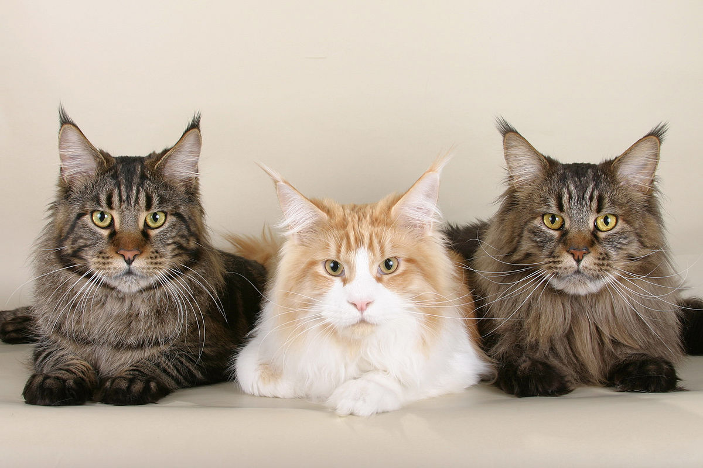

Знайомство з дивовижним світом порід котів
У світі існує величезна різноманітність котячих порід, кожна з яких має свої унікальні особливості, зовнішність та характер. Від пухнастих гігантів до елегантних короткошерстих красенів – кожен знайде свого ідеального чотирилапого друга.
Популярні породи котів
Мейн-кун
Мейн-куни відомі своїми великими розмірами, пухнастим хвостом і лагідним характером. Їх часто називають "ніжними гігантами".
Британська короткошерста
Ці коти мають округлі форми, плюшеву шерсть і спокійний, врівноважений характер. Ідеальні для життя в квартирі.
Сфінкс

Унікальна порода, відома своєю відсутністю шерсті. Сфінкси дуже ласкаві, соціальні та вимагають особливого догляду за шкірою.
Перська кішка
Довгошерсті красуні з плоскою мордочкою і спокійним темпераментом. Потребують регулярного догляду за шерстю.
Сіамська кішка
Елегантні, голосні та дуже товариські коти з характерним забарвленням "пойнтами" (темні мордочка, вуха, лапи та хвіст).